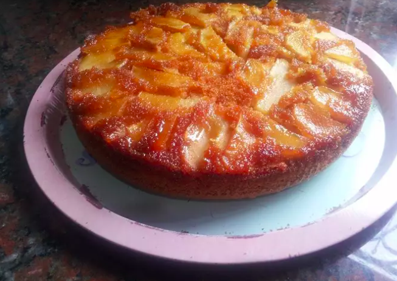

Torta invertida de manzana
Una torta invertida de manzana tan rica y fácil de hacer, que una vez que la pruebes no vas a parar de comer.

Ingredientes
75 minutos
10 raciones
- 100 gr manteca
- 180 gr azúcar
- 2 huevos
- esencia de vainilla c/n
- a gusto ralladura de limón o naranja
- 1 cdita canela, esto es opcional
- 250 cc leche
- 325 gr harina leudante
- 3 manzanas mediana rojas o verdes
- azúcar extra para el caramelo
Paso a paso
- Precalentamos el horno a 180ºC.
- Hacemos el caramelo con el azúcar y lo volvamos a una tortera desmontable, para mi estos moldes son más prácticos a la hora de desmoldar la torta.
- Cortamos las manzanas yo las corto en tiras no muy gruesas y las pongo arriba del caramelo ya frío.
Para el bizcochuelo:
- Batimos la manteca con el azúcar y la vainilla, agregamos los huevos de a uno y la ralladura.
- Por último vamos intercalando la harina con la leche.
- Por último volcamos la preparación al molde, y llevamos la preparación al horno por aprox 50/60 min.
- Dejarlo enfriar un poco y desmoldar.